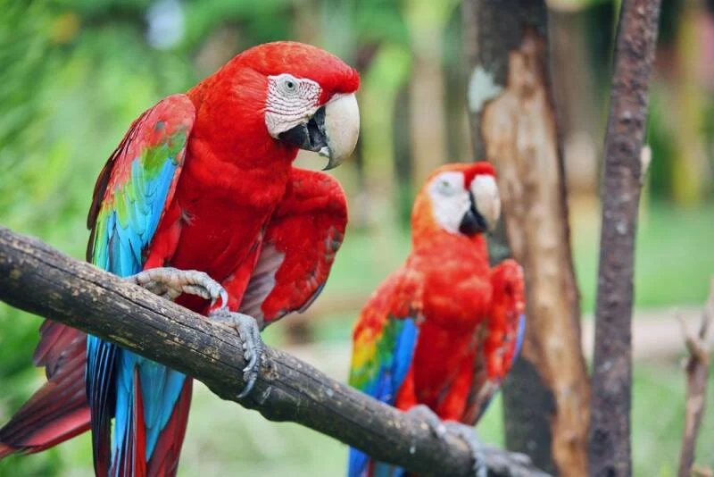
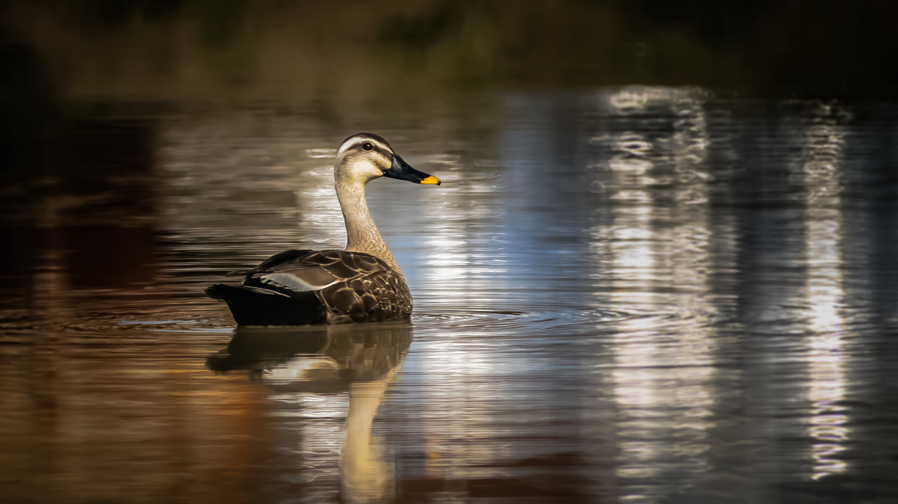
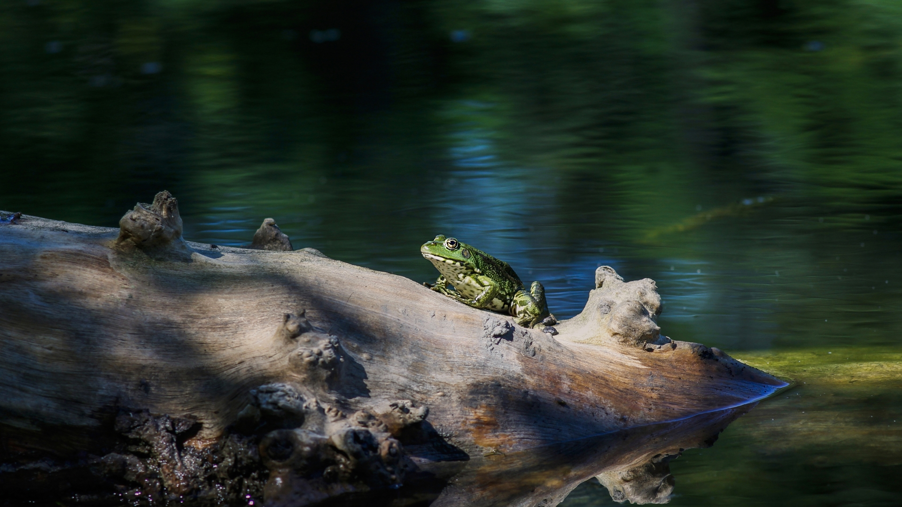

Papagáje sú schopné logickým zmýšľaním a dokážu šikovne vyriešiť určité úlohy jazykového spracovania ako deti vo veku 4 - 6 rokov.
Papagáje zjavne chápu pojmy ako „rovnaké“ a „odlišné“, „väčšie“ a „menšie“, „žiadne“ a čísla.

Kačice môžu surfovať
robia to preto, aby si ulovili potravu alebo sa jednoducho rýchlo pohybovali vo vode.

Žaby môžu zmrznúť bez toho, aby zomreli.
Špeciálne bielkoviny v ich krvi, spôsobujú, že voda v krvi najskôr zamrzne.
V tom istom čase žabia pečeň začne produkovať veľké množstvo glukózy ktorá sa vloží do buniek a podoprie ich.
Koncentrovaný cukrový roztok pomáha zabrániť vytiahnutiu ďalšej vody z buniek žaby, ktorá by ich mohla zničiť.